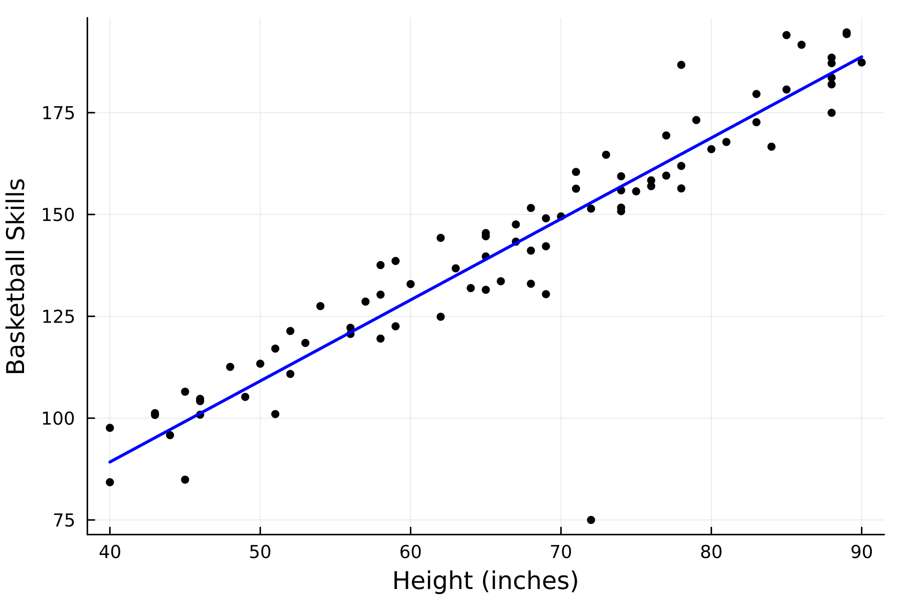

Linear Regression Example
Let's try using Values to fit a line to data, using gradient descent.
First, we'll make up some fake data of two things with an assumed-linear relationship: height and basketball-skills. We'll define the true slope and intercept of the relationship as $m=2$ and $b=10$.
using Random
Random.seed!(1234)
# seeding the random number generator for reproducibility
heights = Float64[]
for count in 1:79
push!(heights, rand(40:90))
end
# TRUE PARAMS y = m*x + b
m = 2
b = 10
skills = Float64[]
for height in heights
skill = m * height + b + randn() * 7.0
push!(skills, skill)
endJust for fun, I'll add myself to this dataset. I'm 72 inches tall, and extremely bad at basketball lol
push!(heights, 72)
push!(skills, 75)Now let's plot the data just to take a look at it:
using Plots
scatter(heights, skills, legend=false, markersize=3, color=:black, xlabel="Height (inches)", ylabel="Basketball Skills",dpi=300)Ok, now let's see if we can use Values to fit a line to this data. First, we'll cast all of the height and skill measurements we have to Values
using SimpleGrad
heights = [Value(item) for item in heights]
skills = [Value(item) for item in skills]Next we'll set two hyper-parameters. We'll set the learning rate lr = 0.000002 and the number of iterations of the fitting to runs = 100000.
lr = 0.000002
runs = 100000Now we'll define our initial guesses:
m_guess = Value(0)
b_guess = Value(0)Now we can actually fit the parameters to the data. We'll do this with runs = 100000 iterations, updating the parameters each time. For each iteration, we start by reseting the m_guess and b_guess gradients to 0. Then, we set global loss = Value(0). We then iterate through our heights array, and calculate the predicted skills using our current parameters as: skill_pred = heights[i] * m_guess + b_guess. We then compare the predicted skill level to the actual skill level for that height and compute the squared error between them: loss_to_add = (skill_pred - skills[i])^2. Then, we add that amount to the total loss: global loss += loss_to_add. All of these calculations are valid operations for our Values, so at this point we can call backward(loss) to calculate the gradients of the parameters. We then update the parameters in the opposite direction of the gradients, scaled by the learning rate. Here's the entire block of code:
for run in 1:runs
# reset the grads to 0 for each iteration
m_guess.grad = 0
b_guess.grad = 0
# set loss to 0
global loss = Value(0)
for i in 1:length(heights)
# predicted skill level, using our parameters
skill_pred = heights[i] * m_guess + b_guess
# squared error compared to actual skill level
loss_to_add = (skill_pred - skills[i])^2
global loss += loss_to_add
end
# backward pass to calculate the gradients
backward(loss)
# updating parameters
m_guess.data -= m_guess.grad * lr
b_guess.data -= b_guess.grad * lr
endLet's see where our guesses for m and b are at now.
println(m_guess)
# output: Value(1.9896292719430697)
println(b_guess)
# output: Value(9.640345678405836)Pretty close to the real values that we originally used to make the data! We can also plot the fit line with these m_guess and b_guess parameters:
heights_data = [item.data for item in heights] # remember heights is full of Values, so need to do this to get the numbers
x_line = minimum(heights_data):maximum(heights_data)
y_line = m_guess.data * x_line .+ b_guess.data
plot!(x_line, y_line, linewidth=2, color=:blue)